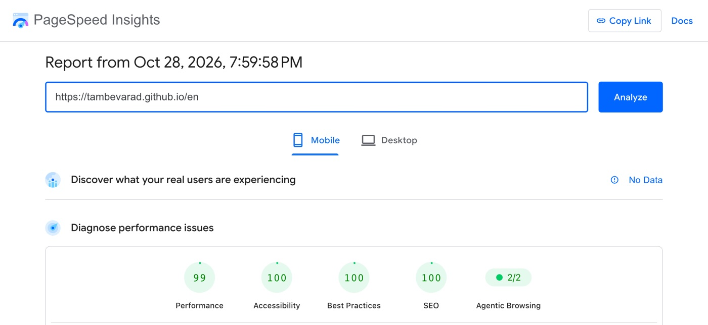

We audited the SolCacao client against the Web Content Accessibility Guidelines (WCAG) 2.2 at conformance level AA. We used two free website checkers on the live site: Google PageSpeed Insights (Lighthouse) and WebAIM WAVE. We also ran the axe-core engine across every interactive state, and did manual checks for the criteria that automated tools cannot fully decide.
wcag2a, wcag2aa,
wcag21a, wcag21aa and wcag22aa. It covers the states
a URL-based checker cannot reach, such as open dialogs and menus, form errors and signed-in
pages.
Home; Catalog (default and filtered); Product detail; Sign in; Create account; Checkout (empty, and with an item plus validation errors); Wholesale; Quote request (signed out, and as a business account at step 1, with validation errors and in Spanish); Contact (default and with validation errors); Feedback; Six-piece sampler; Our story; Care guide; Not-found page; open cart drawer; open mobile menu; open sign-in dialog; signed-in account page.
| Page | English, mobile | English, desktop | Spanish, mobile | Spanish, desktop |
|---|---|---|---|---|
| Home * | 100 | 100 | 100 | 100 |
| Catalog * | 100 | 100 | 100 | 100 |
| Product detail | 100 | 100 | 100 | 100 |
| Wholesale * | 100 | 100 | 100 | 100 |
| Contact | 100 | 100 | 100 | 100 |
| Six-piece sampler | 100 | 100 | 100 | 100 |
| Quote request | 100 | 100 | – | – |
| Sign in | 100 | 100 | – | – |
| Create account | 100 | 100 | – | – |
| Checkout | 100 | 100 | – | – |
| Feedback | 100 | 100 | – | – |
| Our story | 100 | 100 | – | – |
| Care guide | 100 | 100 | – | – |
* Run on the PageSpeed Insights website. Saved reports: pagespeed.web.dev/analysis/https-tambevarad-github-io-en/9pd3za0gzn (home), …/https-tambevarad-github-io-en-catalog/i6wwvnxejv (catalog) and …/https-tambevarad-github-io-en-wholesale/wdgf58rn7c (wholesale). The other runs used Lighthouse 13.5.0 against the same live site. Spanish was run on the six main pages, and every page shares the same templates in both languages. All 19 pages passed every applicable Lighthouse accessibility audit (25 to 28 per page) with none failed. Lighthouse also lists 10 "additional items to check manually" per page, such as focus order; section 5 covers them.

| Errors | Contrast errors | Alerts | Features | Structural elements | ARIA | AIM score |
|---|---|---|---|---|---|---|
| 0 | 0 | 0 | 9 | 16 | 31 | 10 / 10 |
The features WAVE recognized include the skip link and its target and the page language. The
structure includes one h1 and the banner, navigation, main and footer landmarks.
| Result type | Count | Outcome |
|---|---|---|
| Violations (WCAG 2.2 A and AA) | 0 | Pass |
| Rule checks passed (summed over all states) | 3,162 | Pass |
Needs review: color-contrast |
30 | Pass after manual measurement (section 5) |
Needs review: link-in-text-block |
12 | Not applicable after manual check (section 5) |
"Needs review" means axe could not decide automatically, here because elements overlap (for example a text area inside a styled field, or text over the cart drawer's backdrop). Every one of these items was checked by hand.
| WCAG criterion | What we checked | Result |
|---|---|---|
| 1.4.3 Contrast (Minimum) | We computed contrast for every text element on the home, catalog, product, wholesale, checkout, contact, feedback and sampler pages and in the open cart drawer. The lowest ratio is 5.92:1, for the accent "eyebrow" labels; body text is 7:1 to 12:1. The AA minimum is 4.5:1. | Pass |
| 1.4.1 Use of Color (links) | The flagged links ("Back to all chocolates", "Continue shopping") are standalone links with an arrow icon, not links inside a paragraph, so color is not the only cue. Links within body text are underlined. | Pass |
| 1.4.10 Reflow |
Found: at 320 px every page scrolled 23 px sideways.
The letter-spaced wordmark plus four 44 px header buttons needed about 327 px of
a 304 px row. Fixed: below 360 px the wordmark tightens its size and spacing (wider layouts are unchanged). Re-verified on all 26 page and language combinations, and our automated test suite now checks for overflow at 320 px. |
Pass (fixed) |
| 3.1.1 Language of Page |
The <html lang> attribute follows the route: en on English
pages and es on Spanish pages, verified on all 26 page and language
combinations.
|
Pass |
| 2.1.1 Keyboard · 2.4.3 Focus Order · 2.4.7 Focus Visible |
Automated tests check that the mobile menu traps focus and returns it to the menu button.
They also check that the sign-in dialog returns focus to the control that opened it, and
that contact and sampler forms submit by keyboard and move focus to the error summary. We moved through the quote wizard by keyboard only (Tab, Space, Enter); focus moves to each new step's heading. Focus outlines are a visible 3 px ring. |
Pass |
| 2.4.1 Bypass Blocks | A "Skip to content" link is the first focusable element on every page. | Pass |
| 2.4.2 Page Titled · 1.3.1 Info and Relationships |
Every page has a localized title and exactly one h1, verified on all routes.
Landmarks (banner, navigation, main, contentinfo) are present.
|
Pass |
| 2.5.8 Target Size (Minimum) | Icon buttons and quantity steppers are 44 × 44 px; the AA minimum is 24 × 24 px. | Pass |
| 3.3.1 Error Identification · 3.3.2 Labels or Instructions |
Every field has a visible label. Validation errors are described in text next to the
field, collected in a focused error summary (role="alert"), and translated in
both languages.
|
Pass |
| 2.3.3 Animation from Interactions (AAA, advisory) |
Transitions are disabled when the user prefers reduced motion
(prefers-reduced-motion).
|
Supported |
| # | Criterion | Issue | Fix | Status |
|---|---|---|---|---|
| 1 | 1.4.10 Reflow (AA) | Horizontal scrolling of 23 px on every page at 320 px because of header width | Responsive wordmark below 360 px; overflow test extended to 320 px (shell owner, Varad Tambe) | Resolved |
Based on the website checks, automated tests and manual checks above, the SolCacao Phase 2 client meets WCAG 2.2 Level AA for every page and interactive state listed in section 2. The single failure we found (1.4.10 Reflow) was fixed before submission.